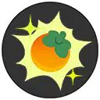
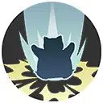
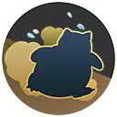
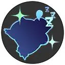
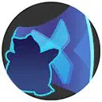
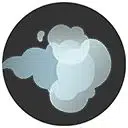

| Attaque | Icône | Description |
|---|---|---|
| Attaque de base |  |
La troisième Attaque de base de Ronflex inflige des dégâts de zone, ralentissant les ennemis touchés. |
| Talent | Icône | Description |
|---|---|---|
| Gloutonnerie |  | Améliore les effets des baies. |
| Attaque spéciale 1 | ||
|---|---|---|
| Attaque | Icône | Description |
| Charge | Charge dans une direction, infligeant des dégâts aux ennemis touchés et les ralentissant. | |
| Attaque | Icône | Description |
|---|---|---|
| Niveau 6: Tacle Lourd Amélioration au niveau 12 |
 | Saute dans les airs avant de retomber violemment, infligeant des dégâts et projetant dans les airs les ennemis touchés. |
| Attaque | Icône | Description |
|---|---|---|
| Niveau 6: Gigotage Amélioration au niveau 12 |
 | Agite les bras, augmentant les dégâts des Attaques de base en fonction des PV manquants de Ronflex. |
| Attaque spéciale 2 | ||
|---|---|---|
| Attaque | Icône | Description |
| Repos |  | S’endort pour récupérer des PV. Pendant toute la durée de la capacité, Ronflex bloque les mouvements des ennemis. |
| Attaque | Icône | Description |
|---|---|---|
| Niveau 8: Barrage Amélioration au niveau 14 |
 | Crée une large barrière entre les bras de Ronflex et octroie un bouclier. Les ennemis qui entrent en contact avec la barrière sont repoussés. |
| Attaque | Icône | Description |
|---|---|---|
| Niveau 8: Baillement Amélioration au niveau 14 |
 | Projette un bâillement qui endort les ennemis touchés. |
| Capacité Unite | ||
|---|---|---|
| Attaque | Icône | Description |
| Sommeil Lourd Débloquage au niveau 9 |
Ronflex s’endort lourdement, propulsant tous les ennemis proches dans les airs. Pendant toute la capacité du sort, il récupère des PV et en inflige des dégâts autour de lui. En utilisant ses capacités, Ronflex peut se tourner et projeter à nouveau les ennemis proches. |
|